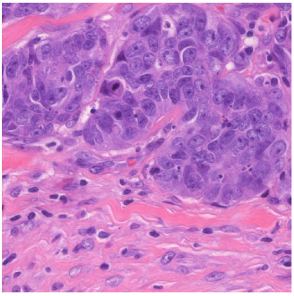
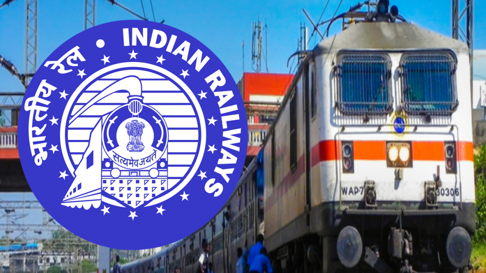
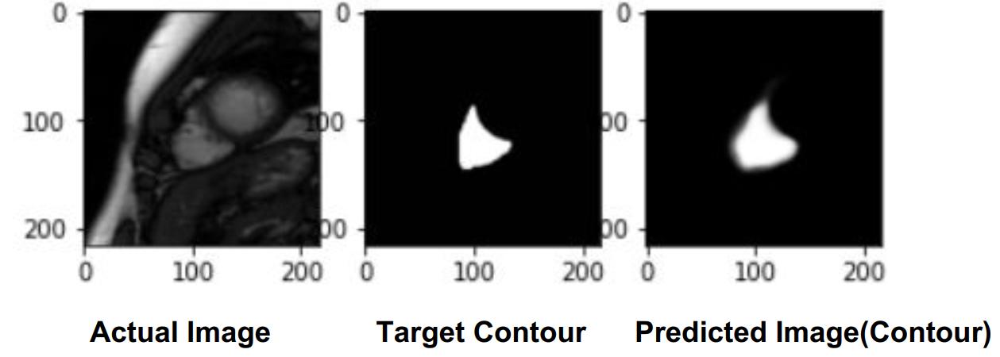
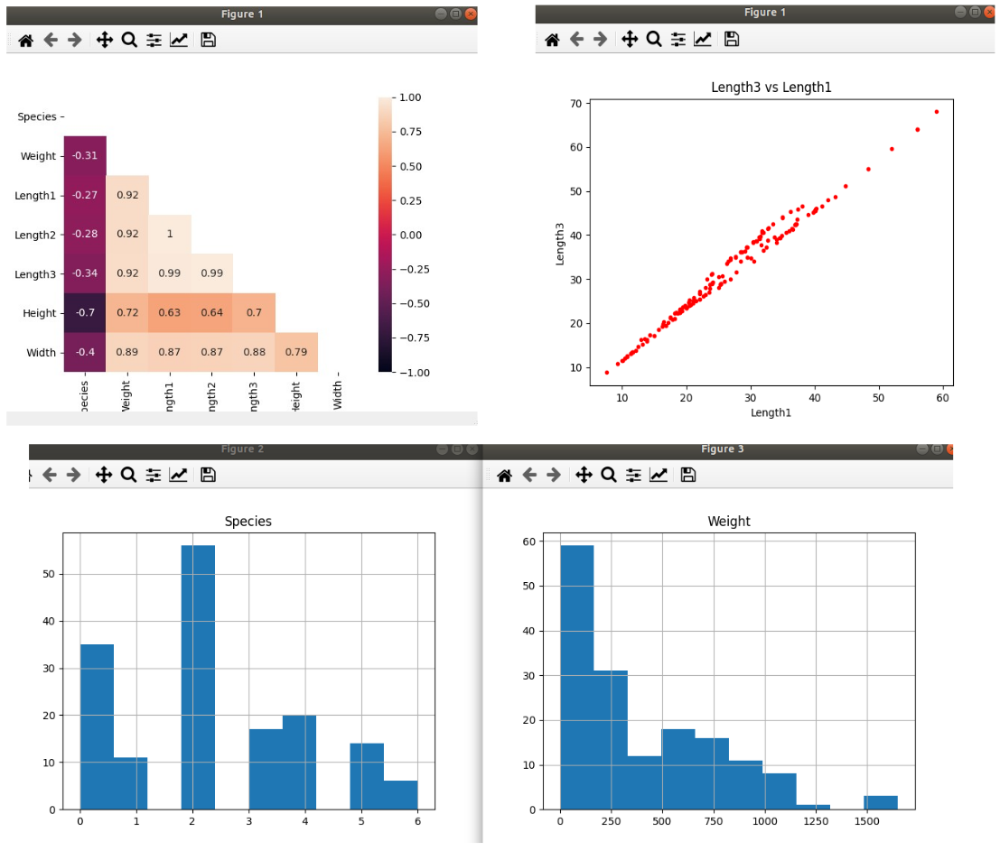
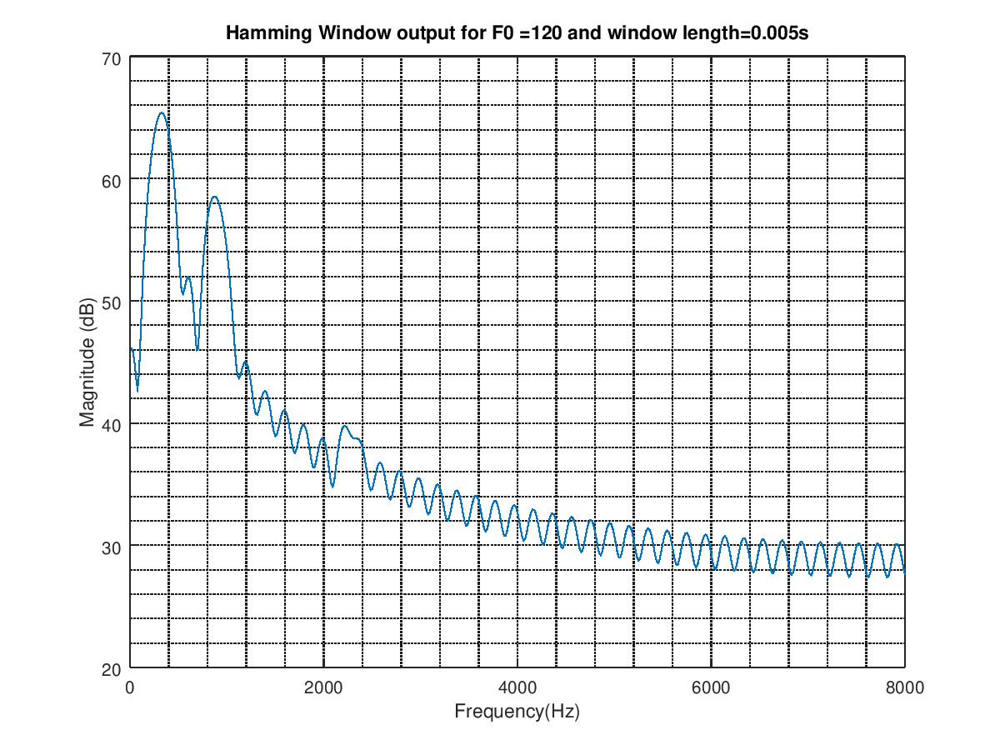
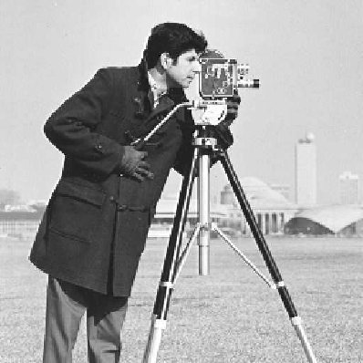
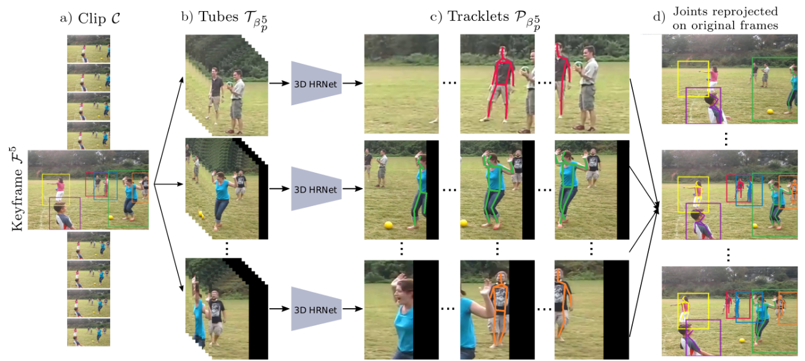
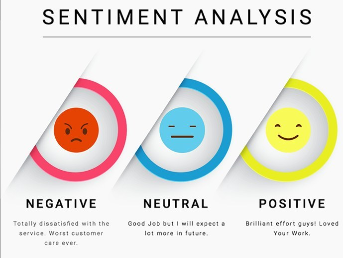
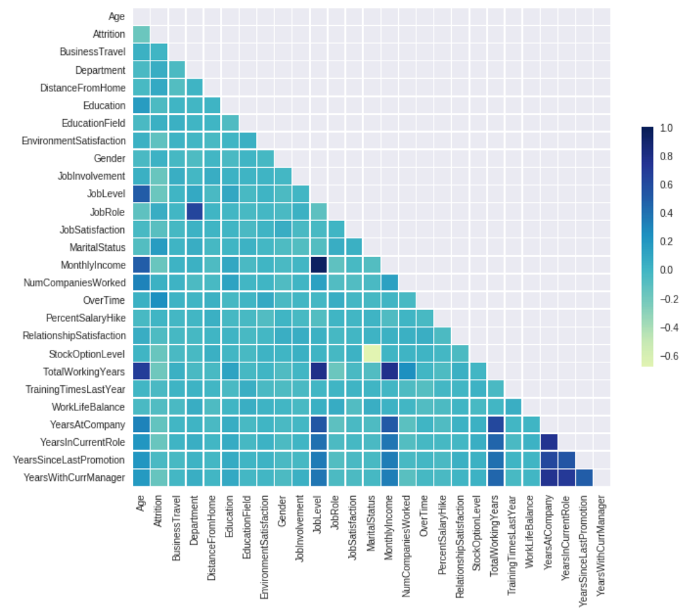

Projects - Deep Learning & Signal Processing

Robust Deep Learning Framework to address General Label Noise in Medical Imaging
- Designed a supervised contrastive learning framework by forming training curriculums with the help of class prototypes on colorectal cancer dataset
- Developing a novel iterative re-weighting scheme for robust deep learning classification under open set label noise for medical imaging data

Python-SQL based UI for Zero-Based Timetabling project for Indian Railways (IR)
- Developed UI for efficient analysis and correction of Zero Based Time Table (ZBTT) simulator output
- Enhanced error detection and correction speed by many folds by creating UI for analysing the ZBTT simulator outputs using plotly and SQL. The tool was given to Indian Railways as an add on to original deliverable
- Streamlined the project using version control and makefile

Image Segmentation of Right Heart Ventricle
- Engineered Pixel-wise Segmentation of Right Ventricle of Heart in MRI Images from RVSC-MICCAI 2012 dataset with UNet Architecture as baseline model to get a Dice-score of 0.2761
- Performed ablation studies with hyperparameter tuning to achieve 0.24 Dice-score with Switching loss

PyQT based UI to train ML models
- Developed UI using PyQT to enable quick data visualisation and ML model training
- Implemented several models (Linear regression,SVM,Logisitc regression, Neural networks,Decision tress, Random forests) that could be tuned, trained and saved on the input data

LPC Analysis of Synthesized vowels & Natural Speech
- Synthesized phonemes by implementing source filter model to replicate the human glottal source
- Performed Linear Predictive Analysis of natural and synthetic speech which involved LP coefficient estimation, constructing LP magnitude spectrum and sound reconstruction

Digital Photography with Flash and No-Flash Image Pairs
- Implemented de-noising and detail transfer to merge the ambient qualities of the no-flash image with the high-frequency flash detail, using cross-bilateral filtering
- Performed white-balancing to change the color tone of ambient images, continuous flash to interactively adjust flash intensity, and red-eye removal to repair artifacts in the flash image

Evolution of Human Pose Estimation
- Reviewed the state of the art method of human pose estimation which propagates known person locations forward and backward in time and searches for poses in those regions.(combined detection and tracking)
- Studied multi-timescale trajectory prediction for long term abnormal human activity detection

Sentiment Analysis on IMDB dataset
- Trained LSTM, GRU, Bi-LSTM and Bi-GRU to study performance changes with number of units and layers and acheived an accuracy of 87% BiGRU
- Studied the effects of using different learning-rate schedulers like Cosine Annealing scheduler, Exponential rate scheduler, Step scheduler and Reduce Learning Rate(LR) on Plateau scheduler

Employee Attrition Classification
- Classified on Employee Attrition Kaggle dataset by conducting data analysis and various mix of classifiers
- Obtained the best test accuracy of 90.09% on the test set with GradientBooster classifier

Support Vector Machine Classifier from scratch
- SVMs are a set of supervised learning methods used for classification, regression and outliers detection
- Implemented and trained SVM Classifier using gradient descent method and visualised it in Python
- Visualised the output decision boundary of the model trained on linearly separable and non-separable data